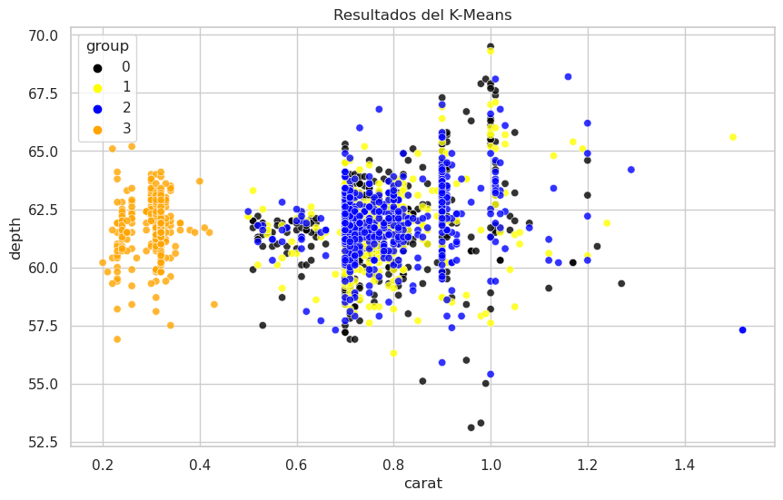
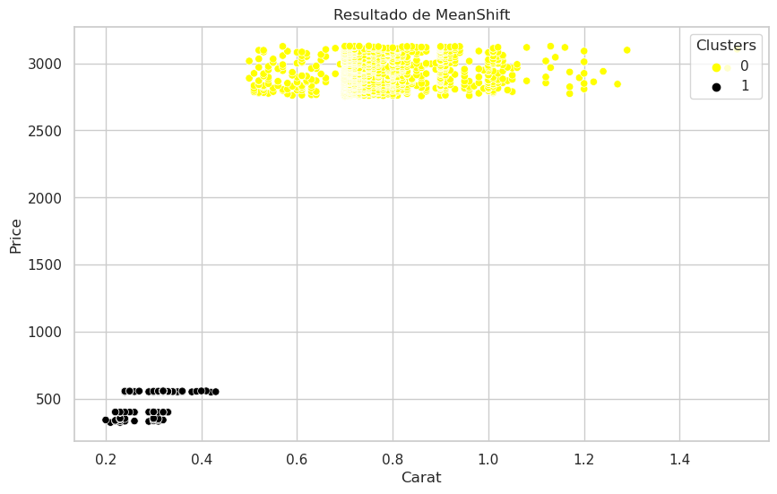

Análisis Detallado y Simple del Proyecto
K-Means
Para el método de K-Means con MiniBatchKMeans, se obtuvieron 4 clusters. Cada diamante fue asignado a uno de estos clusters, y esta asignación se incluyó como una nueva columna llamada 'group' en el conjunto de datos. Esta agrupación se basa en las características de los diamantes, como carat, depth, table, etc.
Mean-Shift
En el método de Mean-Shift, se utilizó la librería sklearn.cluster para realizar el clustering. Se encontraron dos centroides, y cada diamante se asignó a uno de estos dos grupos. La información de la asignación también se incorporó al conjunto de datos en una nueva columna llamada 'meanshift'.
Modelo Utilizado:
- Para K-Means: MiniBatchKMeans de sklearn.cluster. - Para Mean-Shift: MeanShift de sklearn.cluster.
Librerías y Lenguaje de Programación:
- Lenguaje de Programación: Python. - Librerías: pandas para manipulación de datos, sklearn para modelos de clustering, y numpy para operaciones numéricas.
Base de Datos:
- La base de datos utilizada es un conjunto de datos de diamantes, almacenado en un archivo CSV (diamonds.csv).
Proceso ETL:
Carga de Datos:
- Se leyó el conjunto de datos de diamantes desde el archivo CSV.
Preprocesamiento:
- Se eliminaron las columnas 'cut', 'color' y 'clarity' para simplificar el conjunto de características.
Modelo de K-Means:
- Se aplicó el algoritmo de MiniBatchKMeans para realizar el clustering y se agregó la información de agrupación al conjunto de datos.
Modelo de Mean-Shift:
- Se utilizó el modelo MeanShift para encontrar los centroides y asignar cada diamante a uno de los grupos.
Código Aplicado:
K-Means
if __name__ == "__main__":
dataset = pd.read_csv('./data/diamonds.csv')
X = dataset.drop(['cut', 'color', 'clarity'], axis=1)
kmeans = MiniBatchKMeans(n_clusters=4, batch_size=8).fit(X)
dataset['group'] = kmeans.predict(X)
print(dataset)
Mean-Shift
from sklearn.cluster import MeanShift
if __name__ == "__main__":
dataset = pd.read_csv('./data/diamonds.csv')
X = dataset.drop(['cut', 'color', 'clarity'], axis=1)
meanshift = MeanShift().fit(X)
dataset['meanshift'] = meanshift.labels_
print(dataset)
Conclusiones Finales del Proyecto:
K-Means:
- Se identificaron 4 grupos de diamantes basados en sus características. - Esta información puede ser útil para clasificar diamantes según sus propiedades similares.
Mean-Shift:
- Se encontraron 2 grupos de diamantes utilizando el método de Mean-Shift. - Esta agrupación puede ser relevante para identificar patrones de comportamiento de precios o características de los diamantes.
En general, ambos métodos de clustering proporcionan información valiosa sobre la agrupación de diamantes en base a sus características. Estos resultados pueden ser utilizados para segmentar el mercado de diamantes y tomar decisiones estratégicas en la industria.
Repositorio
Si deseas validar cómo se construyó el algoritmo y la base de datos, puedes visitar el siguiente enlace. Allí encontrarás todos los detalles del código y los datos utilizados en este proyecto.
 👉 Haz clic aquí 👈
👉 Haz clic aquí 👈